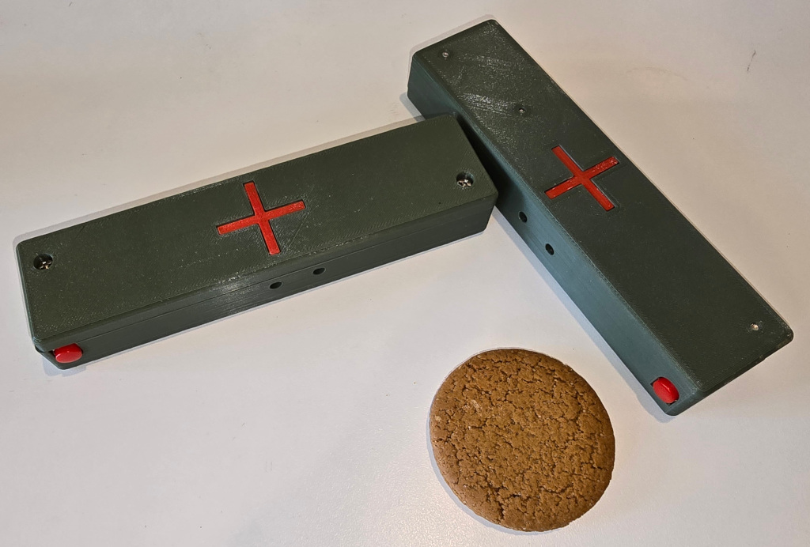

Q-Prop Creations
Medic Timer
Two buttons, both must be held down on the medic timer, no display but beeps every second for the set time. Internal switches set the respawn time in five second increments.
Releasing the button disconnects the battery, so the two AAA batteries should last for years of play.

Gingernut for scale, I didn't have a banana handy